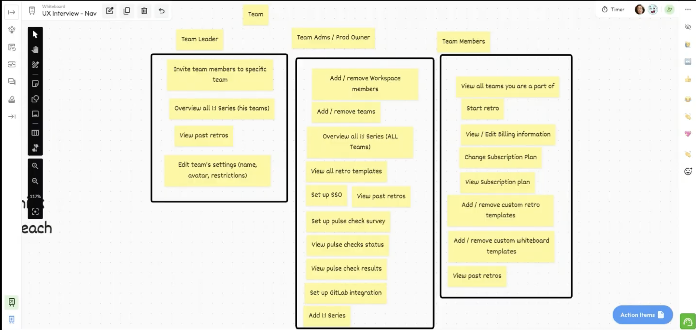
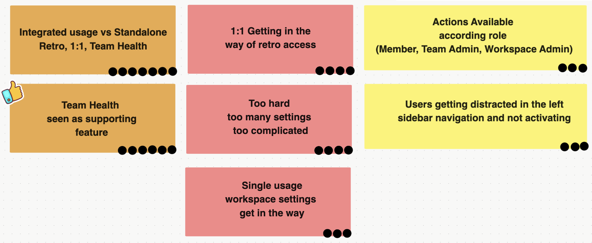
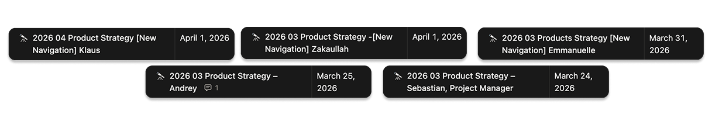
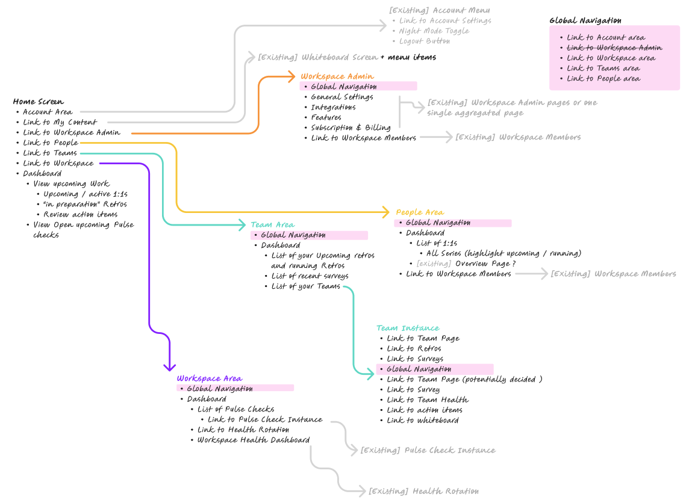
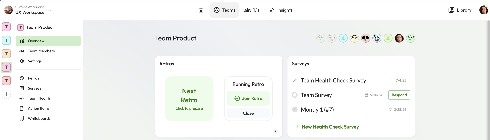
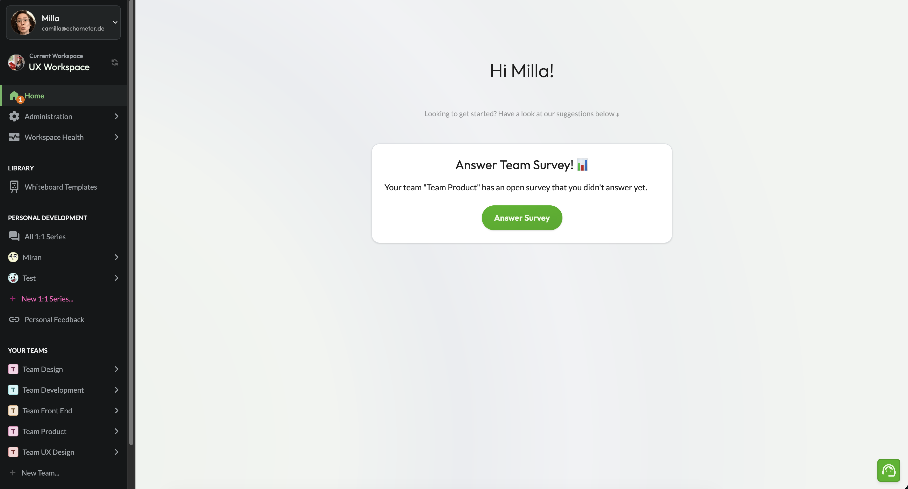
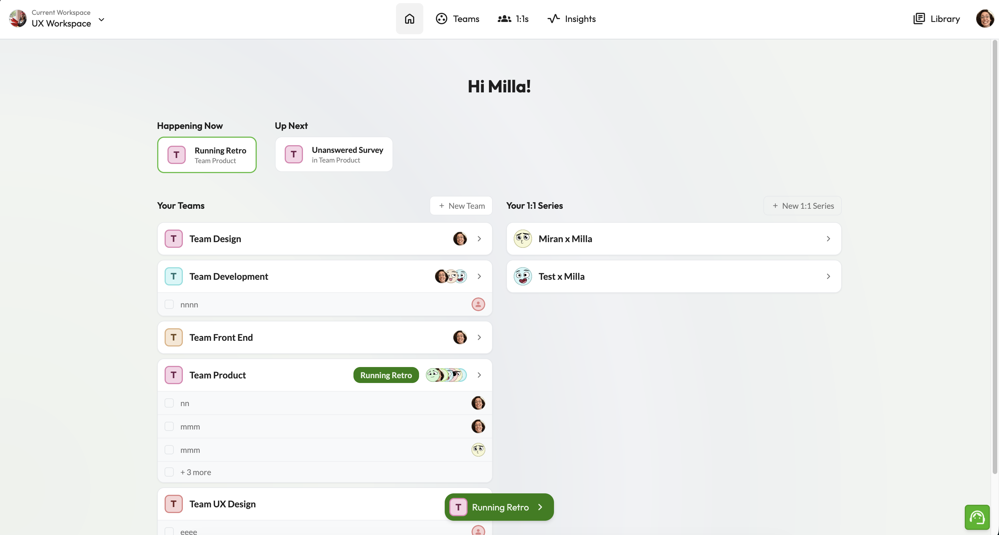
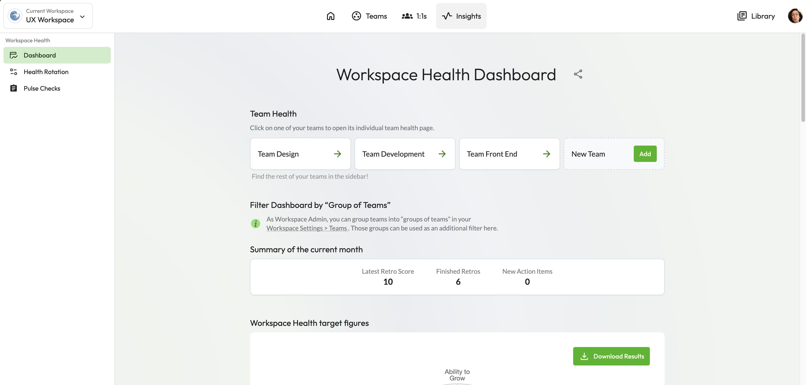
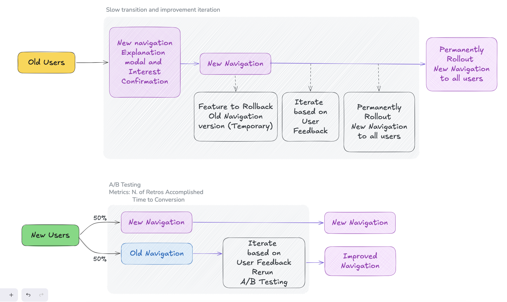
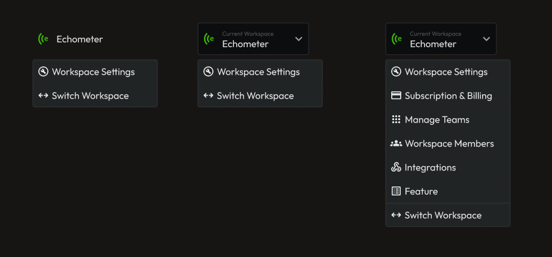

Navigation
Redesign
2026

Specialist in complex B2B SaaS and developer-adjacent products. Design that moves metrics.
The new users were distracted and confused about too many navigation options being presented to them at once. Conversion on M1 (running a retro) suffered. At the same time, team health — a central part of the toolkit — got buried under layers of navigation. The initial brief pointed to sidebar clutter — but I reframed it as a mental model failure after running my own discovery. The real problem was users having a fundamentally broken understanding of the product itself.
Through a series of user workshops, I discovered that most users thought the team health (Survey) module only worked inside retrospectives. The product has two core modules — Teams (with Retros and Surveys) and 1:1s — but users experienced it as a confused mix of features.
This insight directly shaped the IA decision: migrate from a feature-centric sidebar, where all was presented on the same hierarchy, to an entity-centric navigation that mirrors how users actually think about their work.
I started with focused interviews with users and non-users to identify the navigation patterns; AI handled transcription, freeing time to focus on the analysis and review. 10+ user shadowings grounded those patterns in observed behavior.
Three clusters of confusion surfaced. Users mixed Retros, 1:1s, and Team Health into one continuous workflow — they saw integrated usage, not standalone tools, and Team Health especially read as a supporting feature rather than a peer. As the product expanded, the IA had drifted into reflecting how the team had built it rather than how users used it — and the IA itself was teaching users the wrong mental model. Friction came from settings overload — too many controls and gates. The workspace configuration, template library, and account settings were all making access to retros harder and confusing. Role-based action availability was also not clear for users (Member, Team Admin, Workspace Admin). The lack of role transparency added a hidden axis of complexity that only surfaced during interviews. Navigation was reinforcing a mental model that didn't match how the product was actually used.



"Users weren't just confused about where things were — they were confused about what the product was."
Discovery from user workshops
I ran structured workshops with the engineering and product team to pressure-test the proposed IA. Senior leadership was initially skeptical — changing the IA was a bigger change than we initially planned. Interview data shifted the decision, and the team agreed on a new IA via joint workshops.
Navigation structure options were explored using AI-assisted design generation, allowing rapid iteration across structural alternatives before committing to a direction.


This project was not just about a navigation problem — it was a business opportunity. Surfacing the team health feature at the top level was a deliberate bet: if users discovered it, we believed it would drive feature adoption and increase payment conversion.
Echometer team health product had always taken a secondary level of priority compared to retros and 1:1s. This was fixed by taking the Workspace and Team Health Dashboard to the top level and presenting it on equal degree of importance.

Retros · 1:1s · Settings all at the same level. No clear hierarchy. Users had to learn the product's internal logic to navigate it.

Teams (containing Retros + Surveys) and 1:1s as top-level anchors. Workspace settings deprioritized. Navigation mirrors users' mental model.

When rollout began, a small group of existing users pushed back. But the data supported the new structure for the majority — especially for PLG acquisition.
Rather than compromise the IA, I designed a transition path: existing users could optionally use the old layout during a migration window.

The workspace settings were found to be harder to find on the new design, given extra clicks needed to reach it. Compromise had to be made favoring constant usage over first setup features. The second iteration surfaced workspace settings contextually, giving it a more button-like visual to make the settings easier to find.

Hypothesis: restructuring navigation around entities — Teams (Retros), 1:1s, Health — will increase M1 (activation: first retro achieved) by reducing distraction.
Participants with no prior Echometer experience were given structured tasks using the new navigation. Without an existing mental model, users correctly differentiated between Retros, 1:1s, and Health Checks — validating the entity-centric structure before rollout.
Task-based post-rollout interviews with existing users. 7 out of 10 completed tasks faster and with less friction in the new navigation. The 3 who didn't opted out not because of the design — they didn't want a different experience from their workspace until the full migration was available.
98 variant, 89 control. Primary activation metric (M1) not yet significant — experiment still collecting data. Two weeks running, mid-experiment readout at day 14 of 28.
Strongest signal so far. Users with the new navigation explored the Teams module significantly more — the entity-centric structure is surfacing the right areas.
Direction is positive but not yet significant. Final readout at day 28.
Directional signal that users navigated with more intent — finding what they needed without wandering. The core hypothesis in action.
I led dedicated design review sessions to align the implementation with the intended interaction model and quality bar — ensuring the structural decisions survived the handoff intact. UI Review and Mico interaction reviews over multiple iteration rounds
Post-implementation, I created a structured interview template to evaluate navigation changes — now used as a reference for future rollouts across the product.